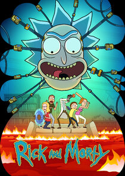
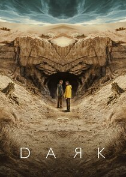
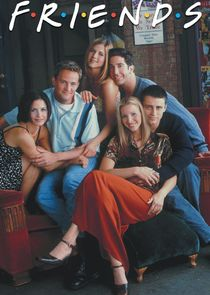
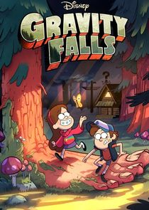
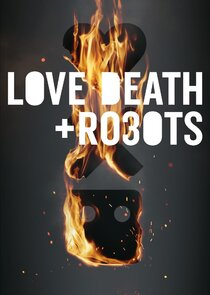
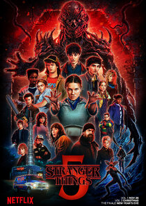
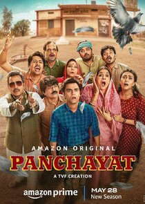
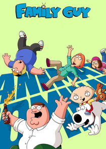

Beyond the professional profile
Curiosity, craft and a few rabbit holes.
My professional work is one part of the picture. This is a less formal space for interests, recommendations and things I enjoy making.
“A portfolio should tell you what I can do. This part tells you what I like.”
Fitness
Not a before-and-after. A series of rebuilds.
48 kg in 2018 → 80 kg in 2023 → 53 kg in 2025 → 75 kg in 2026.
Fitness has meant building myself up, losing ground and finding the patience to begin again. These photographs capture different chapters of that process. The numbers tell part of the story; returning to the routine is what connects them.
Photography
Small moments, noticed.
Sketching
Drawn over time.
Recommendations
Worth checking out.
Personal favourites, memorable worlds and stories that stayed with me. In no particular order.
Movies · Favourites
.jpg) Rockstar (2011)
Rockstar (2011).jpg) La La Land (2016)
La La Land (2016).jpg) Whiplash (2014)
Whiplash (2014).jpg) Interstellar (2014)
Interstellar (2014).jpg) Spirited Away (2001)
Spirited Away (2001).jpg) Howl's Moving Castle (2004)
Howl's Moving Castle (2004).jpg) Kung Fu Hustle (2004)
Kung Fu Hustle (2004).jpg) The Dark Knight (2008)
The Dark Knight (2008).jpg) The Dark Knight Rises (2012)
The Dark Knight Rises (2012).jpg) Fight Club (1999)
Fight Club (1999).jpg) Spider-Man (2002)
Spider-Man (2002).jpg) Spider-Man 2 (2004)
Spider-Man 2 (2004).jpg) Spider-Man 3 (2007)
Spider-Man 3 (2007).jpg) Up (2009)
Up (2009).jpg) Toy Story (1995)
Toy Story (1995).jpg) Toy Story 2 (1999)
Toy Story 2 (1999).jpg) Toy Story 3 (2010)
Toy Story 3 (2010).jpg) Bullet Train (2022)
Bullet Train (2022)Movies · Honourable mentions
.jpg) Shutter Island (2010)
Shutter Island (2010).jpg) Se7en (1995)
Se7en (1995).jpg) The Man from Earth (2007)
The Man from Earth (2007).jpg) The Shawshank Redemption (1994)
The Shawshank Redemption (1994).jpg) The Matrix (1999)
The Matrix (1999).jpg) The Matrix Reloaded (2003)
The Matrix Reloaded (2003).jpg) The Matrix Revolutions (2003)
The Matrix Revolutions (2003).jpg) Memento (2000)
Memento (2000).jpg) Pulp Fiction (1994)
Pulp Fiction (1994).jpg) Dune: Part One (2021)
Dune: Part One (2021).jpg) Dune: Part Two (2024)
Dune: Part Two (2024).jpg) Spider-Man: Into the Spider-Verse (2018)
Spider-Man: Into the Spider-Verse (2018).jpg) Prisoners (2013)
Prisoners (2013).jpg) Sherlock Holmes (2009)
Sherlock Holmes (2009).jpg) Sherlock Holmes: A Game of Shadows (2011)
Sherlock Holmes: A Game of Shadows (2011).jpg) The Handmaiden (2016)
The Handmaiden (2016).jpg) The Game (1997)
The Game (1997).jpg) The Sixth Sense (1999)
The Sixth Sense (1999).jpg) Predestination (2014)
Predestination (2014).jpg) Edge of Tomorrow (2014)
Edge of Tomorrow (2014).jpg) Coherence (2013)
Coherence (2013).jpg) Source Code (2011)
Source Code (2011).jpg) Tenet (2020)
Tenet (2020)Movies · Expect the unexpected
.jpg) Oldboy (2003)
Oldboy (2003).jpg) Nocturnal Animals (2016)
Nocturnal Animals (2016).jpg) Donnie Darko (2001)
Donnie Darko (2001).jpg) Mulholland Drive (2001)
Mulholland Drive (2001).jpg) Return to Silent Hill (2026)
Return to Silent Hill (2026)Indian cinema · Favourites
.jpg) 12th Fail (2023)
12th Fail (2023).jpg) Super 30 (2019)
Super 30 (2019).jpg) 3 Idiots (2009)
3 Idiots (2009).jpg) Munna Bhai M.B.B.S. (2003)
Munna Bhai M.B.B.S. (2003).jpg) Jai Bhim (2021)
Jai Bhim (2021).jpg) Article 15 (2019)
Article 15 (2019).jpg) Laapataa Ladies (2024)
Laapataa Ladies (2024).jpg) Khosla Ka Ghosla (2006)
Khosla Ka Ghosla (2006).jpg) Kahaani (2012)
Kahaani (2012).jpg) Talaash (2012)
Talaash (2012).jpg) Barfi! (2012)
Barfi! (2012).jpg) OMG: Oh My God! (2012)
OMG: Oh My God! (2012).jpg) Dhurandhar (2025)
Dhurandhar (2025).jpg) Tanu Weds Manu (2011)
Tanu Weds Manu (2011).jpg) No Smoking (2007)
No Smoking (2007).jpg) Kaun (1999)
Kaun (1999).jpg) Mukkabaaz (2017)
Mukkabaaz (2017).jpg) Ludo (2020)
Ludo (2020).jpg) Maharaja (2024)
Maharaja (2024)Anime · Favourites
 Mob Psycho 100
Mob Psycho 100 Attack on Titan
Attack on Titan Demon Slayer Kimetsu no Yaiba
Demon Slayer Kimetsu no Yaiba One Punch Man
One Punch Man One Piece
One Piece Mieruko-chan
Mieruko-chan Fullmetal Alchemist Brotherhood
Fullmetal Alchemist Brotherhood Hajime no Ippo
Hajime no Ippo Crayon Shin-chan
Crayon Shin-chan Great Teacher Onizuka
Great Teacher OnizukaAnime · Darker stories
 Berserk
Berserk Elfen Lied
Elfen Lied Devilman Crybaby
Devilman Crybaby Perfect Blue
Perfect Blue Akira
Akira Grave of the Fireflies
Grave of the FirefliesAnime · Honourable mentions
 Tengen Toppa Gurren Lagann
Tengen Toppa Gurren Lagann Kill la Kill
Kill la Kill Mushishi
Mushishi Dr. Stone
Dr. Stone The Disastrous Life of Saiki K.
The Disastrous Life of Saiki K.Anime films · Favourites
 Spirited Away
Spirited Away Howl's Moving Castle
Howl's Moving Castle Your Name.
Your Name. My Neighbor Totoro
My Neighbor Totoro Kiki's Delivery Service
Kiki's Delivery Service Castle in the Sky
Castle in the Sky Ponyo
Ponyo The Wind Rises
The Wind Rises Porco Rosso
Porco Rosso Vampire Hunter D Bloodlust
Vampire Hunter D Bloodlust Ramayana The Legend of Prince Rama
Ramayana The Legend of Prince RamaSeries · Favourites

Rick and Morty
Dark
Friends
Gravity Falls
Love, Death & Robots
Stranger Things
Panchayat
Family Guy